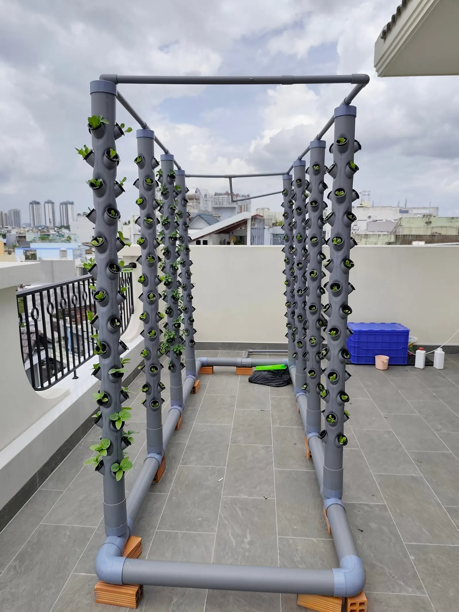

01 / Dịch vụ
Tư vấn chọn mô hình
Cùng đánh giá ánh sáng, diện tích, nguồn điện nước và ngân sách để định hướng mô hình.
Trao đổi nhu cầu ↗Tư vấn · So sánh · Lắp đặt · Bảo trì. Mỗi bước đều bắt đầu từ không gian của bạn.
Cùng đánh giá ánh sáng, diện tích, nguồn điện nước và ngân sách để định hướng mô hình.
Trao đổi nhu cầu ↗
Đối chiếu cấu hình, loại cây, chi phí và phần việc chăm sóc trước khi quyết định.
Trao đổi nhu cầu ↗
Kết nối triển khai, kiểm tra hệ thống và hướng dẫn vận hành tại TP.HCM theo phạm vi báo giá.
Trao đổi nhu cầu ↗
Hỗ trợ kiểm tra bơm, đầu phun, vệ sinh và dinh dưỡng theo thiết bị và tình trạng thực tế.
Trao đổi nhu cầu ↗Chia sẻ diện tích, ánh sáng, nguồn điện nước và nhu cầu rau của gia đình.

So sánh cấu hình, vật tư, chi phí và thống nhất phạm vi công việc.

Lắp khung, trụ, đường ống và bơm; kiểm tra chu kỳ phun và dòng hồi.
Hướng dẫn trồng, vệ sinh, theo dõi dinh dưỡng và cách liên hệ bảo trì.
Chi phí phụ thuộc công suất bơm, lịch phun, lượng nước bổ sung và số trụ. [CẦN BỔ SUNG: công suất thiết bị, thời gian chạy và chi phí điện/nước đo thực tế]. Chúng tôi sẽ làm rõ trong phương án tư vấn.
Thời gian phụ thuộc giống rau, tuổi cây con, ánh sáng và cách chăm sóc. [CẦN BỔ SUNG: lịch thu hoạch đã kiểm chứng cho từng loại rau]. Không áp dụng một mốc thu hoạch chung cho mọi mô hình.
Ưu tiên rau ăn lá và rau thơm; ảnh thực tế có xà lách, rau và cà chua. Cây lấy quả cần đánh giá riêng về tải trọng, giàn đỡ và dinh dưỡng. Cây thân cao, sinh trưởng dài như cây ăn quả thường khó phù hợp.
Theo dõi bơm, nguồn điện, đầu phun và dung dịch dinh dưỡng; vệ sinh trụ, bể theo hướng dẫn của thiết bị. Khi phát hiện cây bệnh, cần loại bỏ sớm và xử lý, thay nước phù hợp. [CẦN BỔ SUNG: lịch bảo trì và phí dịch vụ].
Giá trên website là giá tham khảo từ danh mục gói. Phí lắp đặt, vận chuyển và vật tư cần được xác nhận trong báo giá sau khảo sát. [CẦN BỔ SUNG: phạm vi chi phí của từng gói].
Thời hạn và điều kiện bảo hành phải được ghi rõ theo thiết bị và nhà cung cấp trước khi ký hợp đồng. [CẦN BỔ SUNG: chính sách bảo hành, xử lý sự cố và thời gian phản hồi].
Gửi ảnh không gian và nhu cầu của bạn. Cùng chọn một mô hình phù hợp trước khi quyết định đầu tư.
01 · Tư vấn trung lập theo nhu cầu thực tế
02 · Làm rõ cấu hình và chi phí trước lắp đặt
03 · Hướng dẫn vận hành, hỗ trợ bảo trì
0354 841 103vuonphofarming@gmail.com